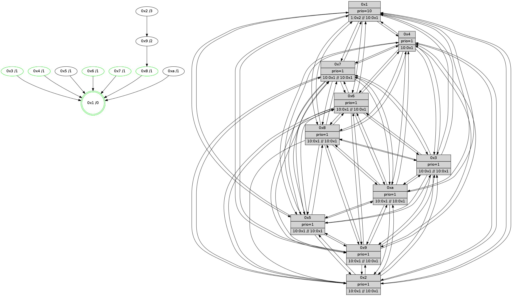

>> << IDX [start] -100 -25 -5 +0 +5 +25 +100 [520.595039129]
 Previous packets
----------------------------------------------------------------------
515.078126 beacon01(faad) #0 coord=01,02,03,04,05,06,07,0a,09,08 cycle=688.0ms assoc
-- color-indic=1 64 3c 1d
515.088109 beacon02(faad) #0 coord=01,02,03,04,05,06,07,0a,09,08 cycle=688.0ms assoc 64 af 2c
515.098111 beacon03(faad) #0 coord=01,02,03,04,05,06,07,0a,09,08 cycle=688.0ms assoc 64 d5 61
515.108110 beacon04(faad) #0 coord=01,02,03,04,05,06,07,0a,09,08 cycle=688.0ms assoc 64 a2 8b
515.118109 beacon05(faad) #0 coord=01,02,03,04,05,06,07,0a,09,08 cycle=688.0ms assoc 64 d8 c6
515.128109 beacon06(faad) #0 coord=01,02,03,04,05,06,07,0a,09,08 cycle=688.0ms assoc 64 56 11
515.138111 beacon07(faad) #0 coord=01,02,03,04,05,06,07,0a,09,08 cycle=688.0ms assoc 64 2c 5c
515.148113 beacon0a(faad) #0 coord=01,02,03,04,05,06,07,0a,09,08 cycle=688.0ms assoc 64 5d 57
515.158114 beacon09(faad) #0 coord=01,02,03,04,05,06,07,0a,09,08 cycle=688.0ms assoc 64 d3 80
515.168115 beacon08(faad) #0 coord=01,02,03,04,05,06,07,0a,09,08 cycle=688.0ms assoc 64 a9 cd
515.179339 [Hello(10): seq=264 sym=6,3,2,8,9,5,7,4,1 sysInfo=coloring-mode-on,ColoringModeIndicationCalled stat=6:4,8,6,1/3:13,4,5,3/2:5,5,3,4/8:13,6,6,2/9:6,5,4,2/5:0,4,5,3/7:14,10,5,1/4:15,6,2,3/1:13,9,9,0]
515.183109 PARSE ERROR************************
Traceback (most recent call last):
File "PacketAnalysis.py", line 167, in showOperaPacket
structPacket = OperaPacketParse.parsePacket(rawPacket)
File "../../pkg-python/HipSens/Core/OperaPacketParse.py", line 461, in parsePacket
return parseHelloMessage(data)
File "../../pkg-python/HipSens/Core/OperaPacketParse.py", line 109, in parseHelloMessage
sysInfo,stability,colorInfo = struct.unpack("!HBB", linkList[0:4])
error: unpack requires a string argument of length 4
48 34 08 00 01 13 00 02 02 12 05 00 02 00 03 00 04 00 07 00 06 00 09 00 0a 00 01 00 53 04 00 14 00 00 4c 12 35 41 34 5b 45 59 23 60 27 8f 28 85 25 52 12 5d 0a 92 53 01
515.186487 [Color(1) seq=12 @0:0 prio=10 >1.@2,1.@3,1.@4,1.@5 >>10.@1,1.@2,1.@3]
515.189025 [Hello(2): seq=329 sym=4,5,7,6,3,9,8,10,1 sysInfo=coloring-mode-on,ColoringModeIndicationCalled stat=4:0,6,3,1/5:1,5,4,3/7:11,11,6,1/6:0,9,6,1/3:13,6,4,2/9:3,2,1,0/8:1,3,1,0/10:1,5,0,0/1:6,7,9,0]
515.192076 [Hello(3): seq=332 sym=1,7,6,2,4,8,9,10,5 sysInfo=coloring-mode-on,ColoringModeIndicationCalled stat=1:5,9,10,0/7:5,11,6,2/6:13,7,6,2/2:13,5,3,4/4:2,7,3,2/8:7,7,6,1/9:5,4,6,2/10:1,3,0,0/5:2,5,6,3]
515.195093 [Hello(4): seq=332 sym=5,7,6,2,3,9,8,10,1 sysInfo=coloring-mode-on,ColoringModeIndicationCalled stat=5:7,5,6,4/7:15,9,7,1/6:2,7,6,2/2:0,6,3,3/3:15,5,5,3/9:3,3,0,0/8:2,4,7,2/10:1,6,3,1/1:7,9,12,0]
515.197649 [Hello(5): seq=332 sym=7,6,4,3,1,9,8,10,2 sysInfo=coloring-mode-on,ColoringModeIndicationCalled stat=7:12,9,6,1/6:0,7,7,1/4:14,6,2,1/3:9,5,1,0/1:9,7,9,0/9:12,5,4,1/8:15,7,5,0/10:7,7,2,1/2:13,5,3,2]
----------------------------------------------------------------------
515.866257 beacon01(faad) #0 coord=01,02,03,04,05,06,07,0a,09,08 cycle=688.0ms assoc
-- color-indic=1 64 9b 6d
515.876240 beacon02(faad) #0 coord=01,02,03,04,05,06,07,0a,09,08 cycle=688.0ms assoc 64 08 5c
515.886241 beacon03(faad) #0 coord=01,02,03,04,05,06,07,0a,09,08 cycle=688.0ms assoc 64 72 11
515.896240 beacon04(faad) #0 coord=01,02,03,04,05,06,07,0a,09,08 cycle=688.0ms assoc 64 05 fb
515.906239 beacon05(faad) #0 coord=01,02,03,04,05,06,07,0a,09,08 cycle=688.0ms assoc 64 7f b6
515.916239 beacon06(faad) #0 coord=01,02,03,04,05,06,07,0a,09,08 cycle=688.0ms assoc 64 f1 61
515.926241 beacon07(faad) #0 coord=01,02,03,04,05,06,07,0a,09,08 cycle=688.0ms assoc 64 8b 2c
515.936245 beacon0a(faad) #0 coord=01,02,03,04,05,06,07,0a,09,08 cycle=688.0ms assoc 64 fa 27
515.946245 beacon09(faad) #0 coord=01,02,03,04,05,06,07,0a,09,08 cycle=688.0ms assoc 64 74 f0
515.956244 beacon08(faad) #0 coord=01,02,03,04,05,06,07,0a,09,08 cycle=688.0ms assoc 64 0e bd
515.967820 [Hello(1): seq=241 sym=4,2,9,5,10,3,8,6,7 sysInfo=coloring-mode-on,ColoringModeRequestCalled stat=4:6,9,7,4/2:2,8,7,5/9:0,8,8,3/5:14,9,7,4/10:3,11,6,1/3:5,10,9,5/8:8,9,10,3/6:7,12,10,2/7:1,12,10,2]
515.970554 [Color(8) seq=12 @0:0 prio=1 >10.@1,1.@2,1.@3,1.@4 >>10.@1,1.@2,1.@3]
515.972783 [Color(10) seq=12 @0:0 prio=1 >10.@1,1.@2,1.@3,1.@4 >>10.@1,1.@2,1.@3]
515.982959 [Color(4) seq=12 @0:0 prio=1 >10.@1,1.@2,1.@3,1.@5]
515.985029 [Color(3) seq=12 @0:0 prio=1 >10.@1,1.@2,1.@4,1.@5 >>10.@1,1.@2,1.@3]
515.990557 [Hello(7): seq=332 sym=2,3,5,6,4,8,9,10,1 sysInfo=coloring-mode-on,ColoringModeIndicationCalled stat=2:2,2,6,5/3:12,1,7,4/5:14,3,7,5/6:5,3,6,2/4:10,3,5,3/8:12,4,6,2/9:13,2,6,3/10:14,2,6,1/1:2,10,7,0]
515.993820 [Hello(6): seq=332 sym=2,3,5,4,7,9,8,10,1 sysInfo=coloring-mode-on,ColoringModeIndicationCalled stat=2:15,4,6,3/3:2,5,6,2/5:3,5,5,4/4:3,5,4,2/7:10,9,4,0/9:0,6,5,2/8:12,4,5,2/10:14,4,7,1/1:3,10,8,0]
515.996640 [Color(6) seq=12 @0:0 prio=1 >10.@1,1.@2,1.@3,1.@4 >>10.@1,1.@2,1.@3]
516.000701 [Color(7) seq=12 @0:0 prio=1 >10.@1,1.@2,1.@3,1.@4 >>10.@1,1.@2,1.@3]
----------------------------------------------------------------------
516.654387 beacon01(faad) #0 coord=01,02,03,04,05,06,07,0a,09,08 cycle=688.0ms assoc
-- color-indic=1 64 27 68
516.664370 beacon02(faad) #0 coord=01,02,03,04,05,06,07,0a,09,08 cycle=688.0ms assoc 64 b4 59
516.674370 beacon03(faad) #0 coord=01,02,03,04,05,06,07,0a,09,08 cycle=688.0ms assoc 64 ce 14
516.684371 beacon04(faad) #0 coord=01,02,03,04,05,06,07,0a,09,08 cycle=688.0ms assoc 64 b9 fe
516.694369 beacon05(faad) #0 coord=01,02,03,04,05,06,07,0a,09,08 cycle=688.0ms assoc 64 c3 b3
516.704371 beacon06(faad) #0 coord=01,02,03,04,05,06,07,0a,09,08 cycle=688.0ms assoc 64 4d 64
516.714371 beacon07(faad) #0 coord=01,02,03,04,05,06,07,0a,09,08 cycle=688.0ms assoc 64 37 29
516.724375 beacon0a(faad) #0 coord=01,02,03,04,05,06,07,0a,09,08 cycle=688.0ms assoc 64 46 22
516.734375 beacon09(faad) #0 coord=01,02,03,04,05,06,07,0a,09,08 cycle=688.0ms assoc 64 c8 f5
516.744376 beacon08(faad) #0 coord=01,02,03,04,05,06,07,0a,09,08 cycle=688.0ms assoc 64 b2 b8
516.755906 [Hello(8): seq=276 sym=5,2,3,4,7,6,9,10,1 sysInfo=coloring-mode-on,ColoringModeIndicationCalled stat=5:2,4,5,3/2:12,6,4,3/3:10,6,5,4/4:1,7,3,2/7:0,9,7,2/6:6,9,8,2/9:2,5,5,2/10:13,5,2,1/1:3,10,10,0]
516.759574 [Hello(3): seq=333 sym=1,7,6,2,4,8,9,10,5 sysInfo=coloring-mode-on,ColoringModeIndicationCalled stat=1:6,9,10,0/7:6,12,6,2/6:14,8,6,2/2:13,5,3,4/4:3,7,3,2/8:7,7,6,1/9:5,4,6,2/10:1,3,0,0/5:3,5,6,3]
516.762592 [Hello(5): seq=333 sym=7,6,4,3,1,9,8,10,2 sysInfo=coloring-mode-on,ColoringModeIndicationCalled stat=7:13,10,6,1/6:1,8,7,1/4:14,7,2,1/3:9,6,1,0/1:10,7,9,0/9:12,5,4,1/8:15,7,5,0/10:7,7,2,1/2:13,5,3,2]
516.765290 [Color(1) seq=13 @0:0 prio=10 >1.@2,1.@3,1.@4,1.@5 >>10.@1,1.@2,1.@3]
516.767847 [Hello(2): seq=330 sym=4,5,7,6,3,9,8,10,1 sysInfo=coloring-mode-on,ColoringModeIndicationCalled stat=4:1,7,3,1/5:2,5,4,3/7:12,12,6,1/6:1,10,6,1/3:14,7,4,2/9:3,3,1,0/8:1,3,1,0/10:1,5,0,0/1:7,7,9,0]
516.773737 [Hello(4): seq=333 sym=5,7,6,2,3,9,8,10,1 mpr= sysInfo=coloring-mode-on,ColoringModeIndicationCalled stat=5:8,5,6,4/7:0,10,7,1/6:3,8,6,2/2:0,6,3,3/3:15,6,5,3/9:3,3,0,0/8:2,4,7,2/10:1,6,3,1/1:8,9,12,0]
516.777628 [Hello(9): seq=276 sym=5,2,3,4,7,6,8,10,1 sysInfo=coloring-mode-on,ColoringModeIndicationCalled stat=5:2,5,3,4/2:14,6,4,2/3:6,9,3,2/4:7,6,2,2/7:3,11,7,1/6:11,6,6,2/8:3,5,1,0/10:13,4,3,1/1:3,7,9,0]
516.782357 [Hello(10): seq=265 sym=6,3,2,8,9,5,7,4,1 sysInfo=coloring-mode-on,ColoringModeIndicationCalled stat=6:5,9,6,1/3:14,5,5,3/2:6,5,3,4/8:14,6,6,2/9:6,5,4,2/5:1,5,5,3/7:15,11,5,1/4:0,7,2,3/1:14,10,9,0]
----------------------------------------------------------------------
517.442518 beacon01(faad) #0 coord=01,02,03,04,05,06,07,0a,09,08 cycle=688.0ms assoc
-- color-indic=1 64 e3 66
517.452499 beacon02(faad) #0 coord=01,02,03,04,05,06,07,0a,09,08 cycle=688.0ms assoc 64 70 57
517.462501 beacon03(faad) #0 coord=01,02,03,04,05,06,07,0a,09,08 cycle=688.0ms assoc 64 0a 1a
517.472501 beacon04(faad) #0 coord=01,02,03,04,05,06,07,0a,09,08 cycle=688.0ms assoc 64 7d f0
517.482503 beacon05(faad) #0 coord=01,02,03,04,05,06,07,0a,09,08 cycle=688.0ms assoc 64 07 bd
517.492502 beacon06(faad) #0 coord=01,02,03,04,05,06,07,0a,09,08 cycle=688.0ms assoc 64 89 6a
517.502501 beacon07(faad) #0 coord=01,02,03,04,05,06,07,0a,09,08 cycle=688.0ms assoc 64 f3 27
517.512507 beacon0a(faad) #0 coord=01,02,03,04,05,06,07,0a,09,08 cycle=688.0ms assoc 64 82 2c
517.522505 beacon09(faad) #0 coord=01,02,03,04,05,06,07,0a,09,08 cycle=688.0ms assoc 64 0c fb
517.532506 beacon08(faad) #0 coord=01,02,03,04,05,06,07,0a,09,08 cycle=688.0ms assoc 64 76 b6
517.545634 [Hello(1): seq=242 sym=4,2,9,5,10,3,8,6,7 sysInfo=coloring-mode-on,ColoringModeRequestCalled stat=4:7,10,7,4/2:3,8,7,5/9:1,8,8,3/5:14,10,7,4/10:4,12,6,1/3:5,11,9,5/8:9,10,10,3/6:8,13,10,2/7:2,13,10,2]
517.551376 [Color(10) seq=13 @0:0 prio=1 >10.@1,1.@2,1.@3,1.@4 >>10.@1,1.@2,1.@3]
517.553436 [Color(6) seq=13 @0:0 prio=1 >10.@1,1.@2,1.@3,1.@4 >>10.@1,1.@2,1.@3]
517.555773 [Color(3) seq=13 @0:0 prio=1 >10.@1,1.@2,1.@4,1.@5 >>10.@1,1.@2,1.@3]
517.559289 [STC(1) #0.16 stable,to-color d=0]
517.561555 [Hello(7): seq=333 sym=2,3,5,6,4,8,9,10,1 sysInfo=coloring-mode-on,ColoringModeIndicationCalled stat=2:3,2,6,5/3:13,1,7,4/5:15,3,7,5/6:5,3,6,2/4:11,3,5,3/8:13,4,6,2/9:14,2,6,3/10:15,2,6,1/1:3,11,7,0]
517.565272 [Color(4) seq=13 @0:0 prio=1 >10.@1,1.@2,1.@3,1.@5]
517.567348 [Color(9) seq=13 @0:0 prio=1 >10.@1,1.@2,1.@3,1.@4 >>10.@1,1.@2,1.@3]
517.569362 [Color(2) seq=13 @0:0 prio=1 >10.@1,1.@3,1.@4,1.@5 >>10.@1,1.@2,1.@3]
517.577758 [Color(7) seq=13 @0:0 prio=1 >10.@1,1.@2,1.@3,1.@4 >>10.@1,1.@2,1.@3]
----------------------------------------------------------------------
518.230648 beacon01(faad) #0 coord=01,02,03,04,05,06,07,0a,09,08 cycle=688.0ms assoc
-- color-indic=1 64 5f 63
518.240630 beacon02(faad) #0 coord=01,02,03,04,05,06,07,0a,09,08 cycle=688.0ms assoc 64 cc 52
518.250631 beacon03(faad) #0 coord=01,02,03,04,05,06,07,0a,09,08 cycle=688.0ms assoc 64 b6 1f
518.260632 beacon04(faad) #0 coord=01,02,03,04,05,06,07,0a,09,08 cycle=688.0ms assoc 64 c1 f5
518.270631 beacon05(faad) #0 coord=01,02,03,04,05,06,07,0a,09,08 cycle=688.0ms assoc 64 bb b8
518.280632 beacon06(faad) #0 coord=01,02,03,04,05,06,07,0a,09,08 cycle=688.0ms assoc 64 35 6f
518.290632 beacon07(faad) #0 coord=01,02,03,04,05,06,07,0a,09,08 cycle=688.0ms assoc 64 4f 22
518.300635 beacon0a(faad) #0 coord=01,02,03,04,05,06,07,0a,09,08 cycle=688.0ms assoc 64 3e 29
518.310637 beacon09(faad) #0 coord=01,02,03,04,05,06,07,0a,09,08 cycle=688.0ms assoc 64 b0 fe
518.320637 beacon08(faad) #0 coord=01,02,03,04,05,06,07,0a,09,08 cycle=688.0ms assoc 64 ca b3
518.331919 [STC(6)->1 #0.16 stable,to-color d=1]
518.333297 [Hello(5): seq=334 sym=7,6,4,3,1,9,8,10,2 sysInfo= stat=7:14,11,6,1/6:1,9,7,1/4:15,8,2,1/3:9,7,1,0/1:11,8,10,0/9:13,6,4,1/8:15,7,5,0/10:8,7,2,1/2:14,6,3,2]
518.336375 [Hello(8): seq=277 sym=5,2,3,4,7,6,9,10,1 sysInfo=coloring-mode-on,ColoringModeIndicationCalled stat=5:3,5,5,3/2:13,7,4,3/3:11,7,5,4/4:2,8,3,2/7:1,10,7,2/6:6,10,8,2/9:3,6,5,2/10:14,5,2,1/1:4,11,11,0]
518.339413 [Hello(3): seq=334 sym=1,7,6,2,4,8,9,10,5 sysInfo=coloring-mode-on,ColoringModeIndicationCalled stat=1:6,10,11,0/7:7,13,6,2/6:14,8,6,2/2:14,6,3,4/4:4,8,3,2/8:7,7,6,1/9:6,5,6,2/10:2,3,0,0/5:4,5,6,3]
518.342459 [STC(5)->1 #0.16 to-color d=1]
518.343767 [Hello(10): seq=266 sym=6,3,2,8,9,5,7,4,1 sysInfo= stat=6:5,10,6,1/3:14,6,5,3/2:6,6,3,4/8:14,6,6,2/9:6,6,4,2/5:1,5,5,3/7:0,12,5,1/4:0,8,2,3/1:15,10,10,0]
518.346200 [STC(3)->1 #0.16 stable,to-color d=1]
518.348928 [STC(10)->1 #0.16 to-color d=1]
518.351143 [Hello(2): seq=331 sym=4,5,7,6,3,9,10,1 sysInfo=coloring-mode-on,ColoringModeIndicationCalled stat=4:2,7,3,1/5:2,5,4,3/7:12,13,6,1/6:1,10,6,1/3:14,7,4,2/9:4,3,1,0/10:2,5,0,0/1:8,7,9,0]
518.354371 [Color(1) seq=14 @0:0 prio=10 >1.@2,1.@3,1.@4,1.@5 >>10.@1,1.@2,1.@3]
518.359960 [Hello(9): seq=277 sym=5,2,3,4,7,6,8,10,1 sysInfo=coloring-mode-on,ColoringModeIndicationCalled stat=5:2,5,3,4/2:14,7,4,2/3:6,9,3,2/4:7,6,2,2/7:3,12,7,1/6:11,6,6,2/8:3,5,1,0/10:14,4,3,1/1:4,7,9,0]
518.362651 [STC(8)->1 #0.16 stable,to-color d=1]
----------------------------------------------------------------------
519.018778 beacon01(faad) #0 coord=01,02,03,04,05,06,07,0a,09,08 cycle=688.0ms assoc
-- color-indic=1 64 6b 7b
519.028760 beacon02(faad) #0 coord=01,02,03,04,05,06,07,0a,09,08 cycle=688.0ms assoc 64 f8 4a
519.038760 beacon03(faad) #0 coord=01,02,03,04,05,06,07,0a,09,08 cycle=688.0ms assoc 64 82 07
519.048761 beacon04(faad) #0 coord=01,02,03,04,05,06,07,0a,09,08 cycle=688.0ms assoc 64 f5 ed
519.058760 beacon05(faad) #0 coord=01,02,03,04,05,06,07,0a,09,08 cycle=688.0ms assoc 64 8f a0
519.068762 beacon06(faad) #0 coord=01,02,03,04,05,06,07,0a,09,08 cycle=688.0ms assoc 64 01 77
519.078760 beacon07(faad) #0 coord=01,02,03,04,05,06,07,0a,09,08 cycle=688.0ms assoc 64 7b 3a
519.088766 beacon0a(faad) #0 coord=01,02,03,04,05,06,07,0a,09,08 cycle=688.0ms assoc 64 0a 31
519.098766 beacon09(faad) #0 coord=01,02,03,04,05,06,07,0a,09,08 cycle=688.0ms assoc 64 84 e6
519.108769 beacon08(faad) #0 coord=01,02,03,04,05,06,07,0a,09,08 cycle=688.0ms assoc 64 fe ab
519.120337 [STC(9)->8-.->1 #0.16 to-color d=2]
519.123020 [Color(4) seq=14 @0:0 prio=1 >10.@1,1.@2,1.@3,1.@5]
519.125063 [Color(2) seq=14 @0:0 prio=1 >10.@1,1.@3,1.@4,1.@5 >>10.@1,1.@2,1.@3]
519.127406 [Color(3) seq=14 @0:0 prio=1 >10.@1,1.@2,1.@4,1.@5 >>10.@1,1.@2,1.@3]
519.129939 [Color(8) seq=14 @0:0 prio=1 >10.@1,1.@2,1.@3,1.@4 >>10.@1,1.@2,1.@3]
519.132286 [Hello(7): seq=334 sym=2,3,5,6,4,8,9,10,1 sym= sysInfo=coloring-mode-on,ColoringModeIndicationCalled stat=]
519.134904 [Hello(6): seq=334 sym=2,3,5,4,7,9,8,10,1 sysInfo=coloring-mode-on,ColoringModeIndicationCalled stat=2:1,5,6,3/3:4,6,6,2/5:5,5,6,4/4:4,6,4,2/7:11,11,4,0/9:2,7,5,2/8:14,4,6,2/10:0,4,8,1/1:5,12,9,0]
519.138108 [Color(7) seq=14 @0:0 prio=1 >10.@1,1.@2,1.@3,1.@4 >>10.@1,1.@2,1.@3]
519.143310 [Color(6) seq=14 @0:0 prio=1 >10.@1,1.@2,1.@3,1.@4 >>10.@1,1.@2,1.@3]
----------------------------------------------------------------------
519.806908 beacon01(faad) #0 coord=01,02,03,04,05,06,07,0a,09,08 cycle=688.0ms assoc
-- color-indic=1 64 d7 7e
519.816892 beacon02(faad) #0 coord=01,02,03,04,05,06,07,0a,09,08 cycle=688.0ms assoc 64 44 4f
519.826891 beacon03(faad) #0 coord=01,02,03,04,05,06,07,0a,09,08 cycle=688.0ms assoc 64 3e 02
519.836891 beacon04(faad) #0 coord=01,02,03,04,05,06,07,0a,09,08 cycle=688.0ms assoc 64 49 e8
519.846890 beacon05(faad) #0 coord=01,02,03,04,05,06,07,0a,09,08 cycle=688.0ms assoc 64 33 a5
519.856891 beacon06(faad) #0 coord=01,02,03,04,05,06,07,0a,09,08 cycle=688.0ms assoc 64 bd 72
519.866890 beacon07(faad) #0 coord=01,02,03,04,05,06,07,0a,09,08 cycle=688.0ms assoc 64 c7 3f
519.876895 beacon0a(faad) #0 coord=01,02,03,04,05,06,07,0a,09,08 cycle=688.0ms assoc 64 b6 34
519.886896 beacon09(faad) #0 coord=01,02,03,04,05,06,07,0a,09,08 cycle=688.0ms assoc 64 38 e3
519.896897 beacon08(faad) #0 coord=01,02,03,04,05,06,07,0a,09,08 cycle=688.0ms assoc 64 42 ae
519.908130 [Hello(4): seq=335 sym=5,7,6,2,3,9,8,10,1 sysInfo=coloring-mode-on,ColoringModeIndicationCalled stat=5:8,5,6,4/7:1,12,7,1/6:4,9,6,2/2:1,8,3,3/3:15,7,5,3/9:5,4,1,0/8:2,5,8,2/10:2,6,4,1/1:9,10,12,0]
519.910761 [Hello(8): seq=278 sym=5,2,3,4,7,6,9,10,1 sysInfo=coloring-mode-on,ColoringModeIndicationCalled stat=5:3,5,5,3/2:13,7,4,3/3:11,7,5,4/4:2,8,3,2/7:2,10,7,2/6:7,11,8,2/9:3,6,6,2/10:14,5,2,1/1:4,11,11,0]
519.913849 [Hello(2): seq=332 sym=4,5,7,6,3,9,10,1 sysInfo= stat=4:2,7,3,1/5:2,5,4,3/7:13,14,6,1/6:2,11,6,1/3:14,8,4,2/9:5,3,2,0/10:2,5,0,0/1:8,8,9,0]
519.916565 [STC(2)->9-.->1 #0.16 to-color d=3]
519.918259 [Hello(10): seq=267 sym=6,3,2,8,9,5,7,4,1 sysInfo= stat=6:6,11,6,1/3:14,7,6,3/2:7,7,3,4/8:14,7,7,2/9:7,6,5,2/5:1,5,5,3/7:1,13,5,1/4:0,9,2,3/1:15,11,10,0]
519.921133 [Hello(3): seq=335 sym=1,7,6,2,4,8,9,10,5 sysInfo=coloring-mode-on,ColoringModeIndicationCalled stat=1:6,11,11,0/7:8,13,6,2/6:15,9,6,2/2:15,6,3,4/4:4,8,3,2/8:7,8,7,1/9:7,5,7,2/10:2,3,1,0/5:4,5,6,3]
519.924241 [Color(1) seq=15 @0:0 prio=10 >1.@2,1.@3,1.@4,1.@5 >>10.@1,1.@2,1.@3]
519.928089 [Hello(5): seq=335 sym=7,6,4,3,1,9,8,10,2 sysInfo= stat=7:15,12,6,1/6:2,10,7,1/4:15,9,2,1/3:9,8,1,0/1:11,9,10,0/9:14,6,5,1/8:15,8,6,0/10:9,7,3,1/2:15,7,3,2]
519.930997 [Hello(9): seq=278 sym=5,2,3,4,7,6,8,10,1 sysInfo= stat=5:2,5,3,4/2:14,8,4,2/3:6,10,3,2/4:7,7,2,2/7:4,12,7,1/6:12,7,6,2/8:3,6,2,0/10:14,4,3,1/1:5,7,9,0]